Арктика нагревается
Арктика нагревается примерно в 4 раза быстрее, чем остальная часть земного шара. И климат здесь меняется в 3–4 раза быстрее, чем в среднем на планете. Поэтому последствия таких изменений здесь особенно заметны.
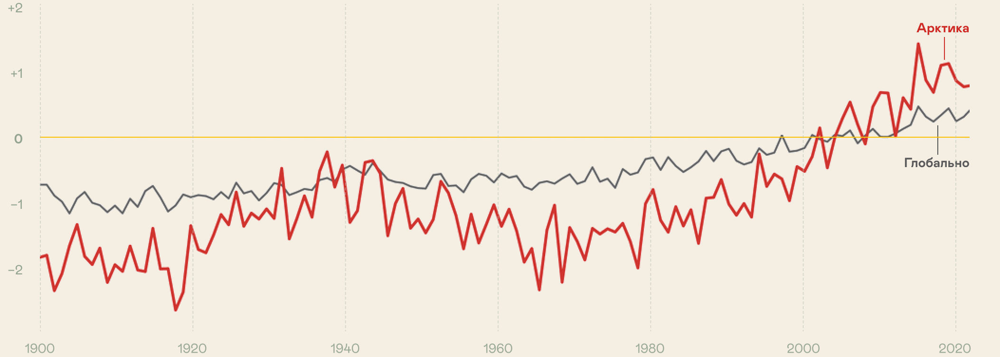
Тает морской лёд
Морской лёд Северного Ледовитого океана — ключевой элемент арктического климата, это «природный холодильник» Земли. За счёт высокого альбедо он отражает основную часть солнечного тепла обратно в космос.
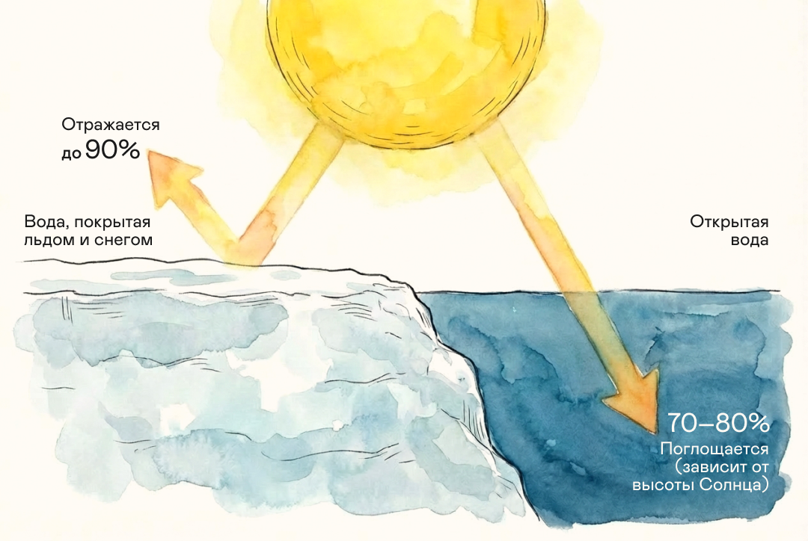
У тёмной морской воды альбедо гораздо ниже, чем у льда, она поглощает больше солнечного тепла, чем отражает. В результате температура воды в океане повышается и лёд тает ещё сильнее. Возникает альбедо-зависимая положительная обратная связь, которая ускоряет потепление.
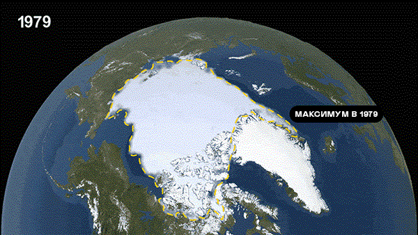
С 1979 года спутниковые наблюдения фиксируют: площадь морского льда стабильно сокращается примерно на 13% за десятилетие. Летний минимум зафиксирован в сентябре 2012 года.
По прогнозам Межправительственной группы экспертов по изменению климата, уже к середине XXI века морской лёд в Арктике может полностью исчезать на время летнего сезона. Последствия для местных экосистем будут катастрофическими.
Меняются течения океана и воздуха
Если весь морской лёд Арктики станет сезонным, а не многолетним, это изменит атмосферные и океанские течения. Температура в северном полушарии ещё больше повысится. Ледники Гренландии и морские льды из Северного Ледовитого океана продолжат таять, из-за чего верхний слой воды в северной части Атлантического станет более пресным.
Это замедлит или полностью остановит глубоководную циркуляцию в этом районе. В результате может нарушиться весь глобальный конвейер океанических течений.
Температура в северном полушарии ещё больше повышается
Ледники Гренландии и морские льды из Северного Ледовитого океана продолжают таять
Из-за этого верхний слой воды в северной части Атлантического становится более пресным
Это замедлит или полностью остановит глубоководную циркуляцию в этом районе
Если это произойдёт, может нарушиться весь глобальный конвейер океанических течений
Тает вечная мерзлота
В Арктике тает быстро не только морской лёд, но и вечная мерзлота. В зоне многолетней мерзлоты живёт около 4 млн человек. Ещё 10 млн находятся в регионах, где инфраструктура зависит от стабильности мёрзлых грунтов. Примерно 70% объектов — здания, дороги, трубопроводы — требуют сохранения мерзлоты. Ведь когда она оттаивает, поверхность земли буквально начинает проваливаться.
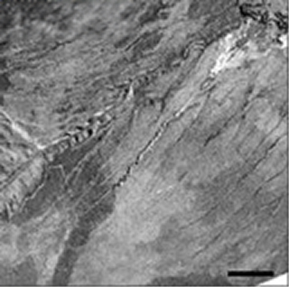
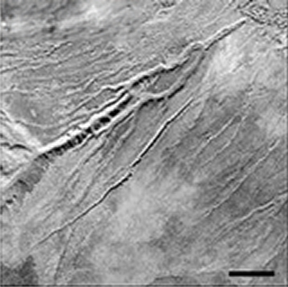
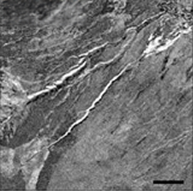
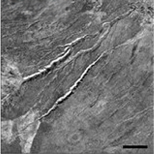
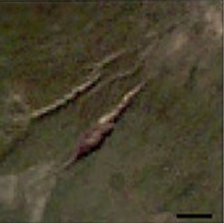
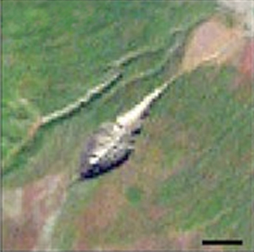
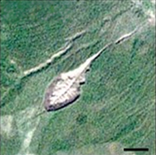
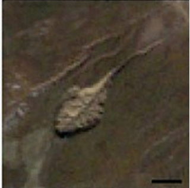
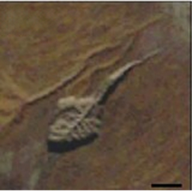
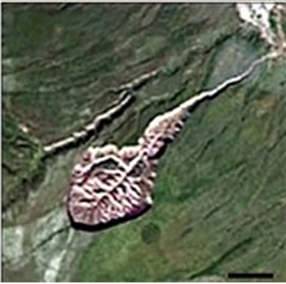
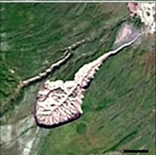
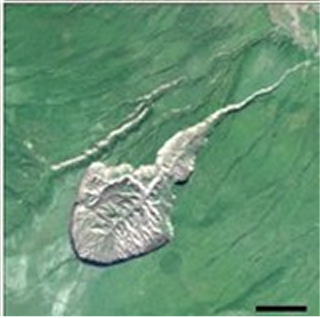
Батагайский кратер — самый большой кратер многолетней мерзлоты в мире. Представляет собой растущий провал длиной 1 км и глубиной до 100 м. Расположен в Якутии. Появился в 60-е годы прошлого столетия.
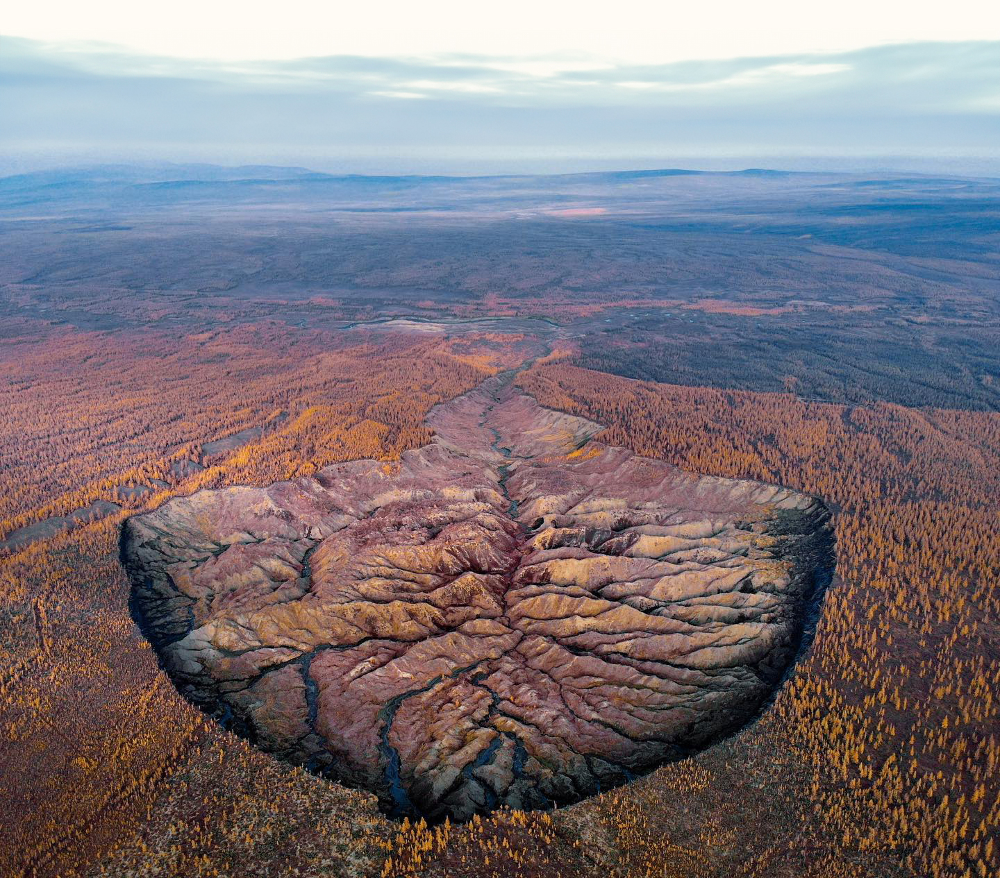
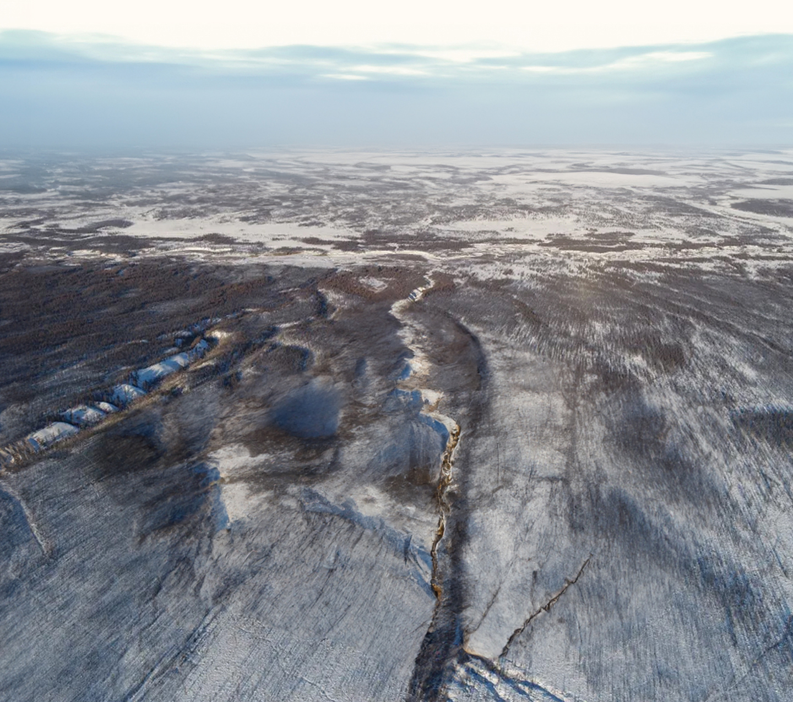
Реконструкция местности в середине 20-го века (слева) и то, как выглядит кратер сейчас (справа)
Водные ресурсы и продовольственная безопасность под угрозой
Из-за роста температуры нарушается режим выпадения осадков и весь круговорот воды в природе.
Усиливаются наводнения и засухи. Рост глобальных температур повышает количество влаги, которую может удерживать атмосфера. Это с одной стороны вызывает более сильные, но более редкие экстремальные ливни, а с другой — провоцирует интенсивные засухи, поскольку с поверхности земли испаряется больше воды. По прогнозам, риски засух и наводнений будут и дальше возрастать с каждым градусом глобального потепления.
Запас доступной пресной воды сокращается. Наводнения и засухи приводят к большему загрязнению воды через отложения, патогены и пестициды. Повышение уровня моря приведёт к засолению грунтовых вод. Пресная вода станет менее доступна людям и экосистемам в прибрежных районах. Всё это в результате ведёт к нехватке воды на Земле и росту стихийных бедствий.
Падает урожайность сельхозкультур. Ухудшается качество почв, они засоляются, расширяется ареал вредителей сельскохозяйственных культур, в некоторых районах усиливаются засухи. Всё это приводит к падению урожая. Глобальное потепление на 2°C в самом оптимистическом прогнозе может снизить объём сельскохозяйственного производства до 25%.
Экосистемы разрушаются, биоразнообразие обедняется
Человек сильно влияет на биоразнообразие, прежде всего используя земли для сельского хозяйства. Уже более 70% суши, не покрытой льдом, было изменено из-за такой деятельности.
Сейчас всё больше на природу влияет изменение климата. Оно меняет места обитания животных и растений, заставляет их мигрировать в более прохладные районы, разрушает экосистемы, например, коралловые рифы, и увеличивает число экстремальных погодных явлений.
Важно помнить, что связь между климатом и биоразнообразием двусторонняя. Климат влияет на природу, а здоровые экосистемы помогают смягчать климатические изменения. Леса, луга и болота поглощают углекислый газ и уменьшают вред от экстремальной погоды. Поэтому сохранение и восстановление природных систем и их разнообразия — это важный способ борьбы с изменением климата.
Вместе с климатом меняется жизнь всего человечества
Экономика страдает от роста числа экстремальных погодных событий — ураганов, наводнений, засух, циклонов. Они угрожают людям, животным, растениям и наносят серьёзный экономический ущерб всем странам. Международные организации считают глобальное потепление одним из главных экономических рисков нынешнего десятилетия.
Уязвимость стран и регионов к экстремальным погодным явлениям зависит от климата, социальных, экономических и географических факторов.
- Поднятие уровня океанов
- Учащение природных катастроф
- Снижение урожайности
- Повышение температуры и экстремальная жара
- Угрожает прибрежным районам, вызывает потери инфраструктуры и недвижимости
- Растут затраты на восстановление, снижается инвестиционная привлекательность
- Увеличиваются цены на продовольствие, усиливается голод и инфляция
- Повышается смертность, падает производительность труда, растут расходы на здравоохранение
- Малые островные государства и прибрежные слаборазвитые страны
- Районы с высокой опасностью наводнений, ураганов, землетрясений
- Места с истощёнными земельными ресурсами и ростом населения
- Люди, живущие в бедности и регионы с жарким климатом
Как изменение климата влияет на здоровье человека
Рост смертности в крупных городах из-за «волн жары». В России потепление происходит в среднем в 2,5–2,8 раза быстрее, чем в остальном мире — на 0,45°C за десятилетие, по данным Росгидромета. Это приводит к учащению аномально жарких периодов в мегаполисах, которые вызывают резкий скачок смертности от сердечно-сосудистых и респираторных заболеваний. Например, во время жары 2010 года в городах с резко-континентальным климатом смертность среди людей старше 65 лет от инсультов вырастала на 49%, а от гипертонической болезни — на 84%.
Обострение аллергий и распространение инфекций. Из-за смягчения зим и изменения сезонных циклов в России растёт риск заражения клещевыми инфекциями, такими как болезнь Лайма. Кроме того, потепление и рост концентрации CO₂ удлиняют сезон цветения растений и увеличивают количество пыльцы, что делает жизнь аллергиков тяжелее и провоцирует развитие астмы.
Угроза для здоровья детей и новорождённых. Экстремальные температуры негативно влияют на течение беременности — жара повышает риск преждевременных родов на 5% при росте температуры на 1 градус и до 16% при аномальных «волнах жары». Сегодня в большинстве стран, включая Россию, смертность от холода всё ещё значительно превышает смертность от жары. Однако глобальное потепление гарантированно усилит риски от аномальных волн жары летом.
Климатические «точки невозврата»
Климатическая точка невозврата — условное критическое пороговое значение, при котором происходит изменение глобального или регионального климата от одного стабильного состояния к другому стабильному состоянию. Это явление может быть необратимым.
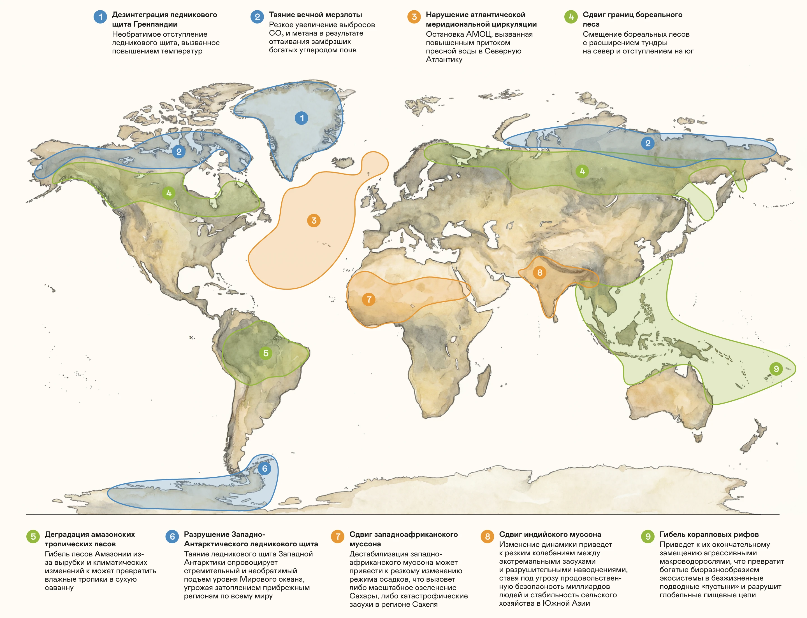
Как подготовиться к климатическим изменениям и защитить природу и экономику
Климатические изменения вызывают климатические риски — возможные вредные последствия для природы, общества и экономики. Эти риски делят на два типа: физические — от прямых ударов природных катастроф — ураганов, наводнений и пожаров; переходные — из-за перестройки экономики для снижения выбросов парниковых газов. Сюда входят новые законы, изменения на рынках и внедрение новых технологий.
Чтобы найти лучшие решения и уменьшить угрозы, нужно внимательно изучать климатические риски. Идеальным решением была бы полная остановка изменения климата — митигация. Это любые меры, направленные на обращение вспять или замедление изменения климата.
Однако изменение климата уже происходит, поэтому смягчения последствий будет недостаточно, особенно без масштабных национальных или международных климатических действий. Нам придётся адаптироваться к существующим и будущим последствиям изменения климата.
Адаптация к климату означает, что природные, социальные и экономические системы меняются, чтобы справиться с реальными или ожидаемыми изменениями и их последствиями. Способы адаптации зависят от конкретной страны, региона или организации — универсального решения нет.
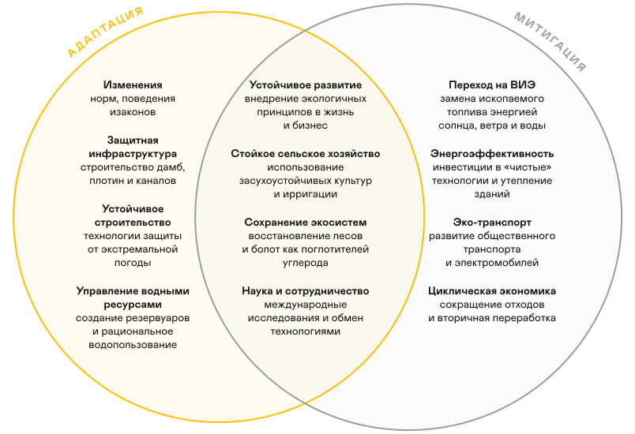
Некоторые называют адаптацию признанием поражения и считают, что все силы нужно направить лишь на остановку изменений. Но на самом деле адаптация очень важна для защиты миллионов людей, животных и растений.
Она помогает избежать будущих проблем, например, повреждений инфраструктуры и ухудшения здоровья, а также открывает новые экономические возможности и приносит пользу обществу и природе.
Таяние льдов и перестройка экосистем — это не просто природные явления. Эти процессы напрямую влияют на мировую экономику, заставляя бизнес и целые страны искать новые пути развития.
В следующем разделе вы узнаете, как климат меняет экономику, что такое углеродный след и почему мир говорит о декарбонизации.